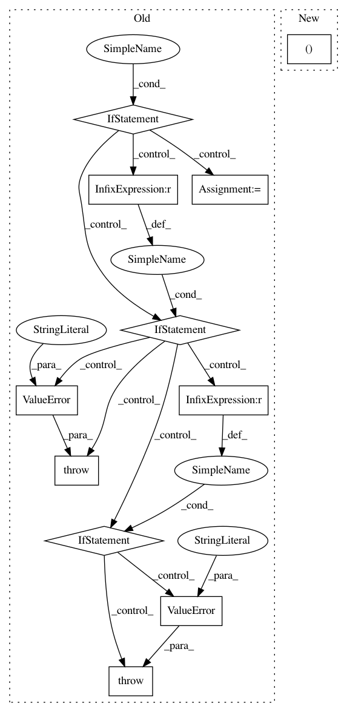

54fed17211d0b077579fba58e93075aee9312668,texar/modules/decoders/transformer_decoders.py,TransformerDecoder,__init__,#TransformerDecoder#Any#Any#Any#,85
Before Change
layers.get_initializer(self._hparams.initializer))
// Make the output layer
if is_callable(output_layer):
self._output_layer = output_layer
elif tf.contrib.framework.is_tensor(output_layer):
self._vocab_size = shape_list(output_layer)[1]
self._output_layer = self._make_output_layer_from_tensor(
output_layer)
elif output_layer is None:
if self._vocab_size is None:
raise ValueError(
"Either `output_layer` or `vocab_size` must be provided"
" Set `output_layer=tf.identity` if no output layer is "
"wanted.")
with tf.variable_scope(self.variable_scope):
self._output_layer = tf.layers.Dense(
units=self._vocab_size,
use_bias=self._hparams.output_layer_bias)
else:
raise ValueError(
"output_layer should be tensor or callable layer or None."
"Unsupported type:", type(output_layer)
)
self.multihead_attentions = {
"self_att": [],
"encdec_att": []
}
After Change
layers.get_initializer(self._hparams.initializer))
// Make the output layer
self._output_layer, self._vocab_size = _make_output_layer(
output_layer, vocab_size, self._hparams.output_layer_bias,
self.variable_scope)
In pattern: SUPERPATTERN
Frequency: 3
Non-data size: 11
Instances
Project Name: asyml/texar
Commit Name: 54fed17211d0b077579fba58e93075aee9312668
Time: 2019-04-05
Author: zhitinghu@gmail.com
File Name: texar/modules/decoders/transformer_decoders.py
Class Name: TransformerDecoder
Method Name: __init__
Project Name: asyml/texar
Commit Name: 54fed17211d0b077579fba58e93075aee9312668
Time: 2019-04-05
Author: zhitinghu@gmail.com
File Name: texar/modules/decoders/rnn_decoder_base.py
Class Name: RNNDecoderBase
Method Name: __init__
Project Name: keras-team/keras
Commit Name: 87a746878ba2359a7fb8135ed5829e6c5003b4db
Time: 2019-01-09
Author: me@taehoonlee.com
File Name: keras/backend/cntk_backend.py
Class Name:
Method Name: separable_conv1d